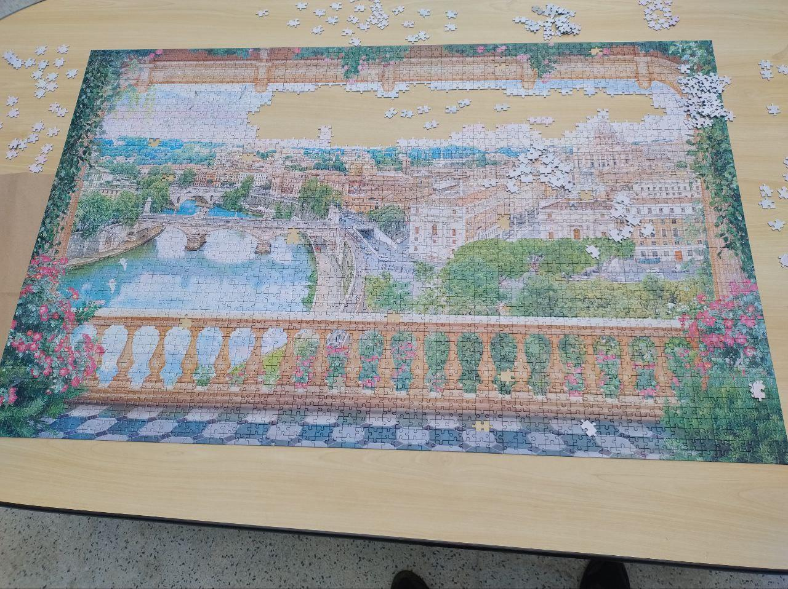

Minhas mais sinceras boas vindas aos Calouros! Estamos todos ansiosos para conhecê-los.
Pensando em vocês, fiz esse guia para ajudá-los a lidar com as emoções e inseguranças
no primeiro período.
Pra tornar mais relevante, fiz uma pesquisa com o restante dos estudantes e vou intercalar algumas
opiniões com as minhas. A todos que responderam à pesquisa, gratidão. Creio que colocar todas as opiniões
aqui tornaria o guia confuso e até problemático. Então tive que selecionar algumas. Houveram sugestões boas
das quais não dispûs de tempo suficiente para trazer aqui. Peço desculpas e
agradeço a compreensão de todos!
ESTA PÁGINA É FEITA POR ESTUDANTES E NÃO NECESSARIAMENTE REPRESENTA A OPINIÃO DA INSTITUIÇÃO
Quem sou eu?
Eu sou o Davi Aires, entrei em 2023.2, tenho 22 anos e fui um dos poucos de minha turma
que conseguiu passar em FAC. Não digo isso para me vangloriar, muito pelo contrário.
Sei que não sou melhor que ninguém aqui e que "minha vocação" e vontade era de fazer
qualquer curso na área de humanas (mais precisamente história). O máximo que tinha visto
de programação era if/else. E aqui estou eu nas férias fazendo alguns projetos e praticando
programação. HA HA
Passar em FAC não me faz melhor que nenhum de meus colegas. Mas quando eu entrei, adoraria
que alguém tivesse me garantido que é possível alguém como eu passar em tudo e como.
Mas também tive medo de perguntar. Por isso tô escrevendo isso aqui.
Ah! e
eu sou do turno da manhã! Já estudei à noite em outra universidade e sei que o clima e as
pessoas são bem diferentes, então, se você é da noite e está lendo isso, tenha isso em mente.
Por que cursar ADS aqui?
Bom, essa é uma questão que vejo muitos colegas, principalmente do primeiro período na dúvida.
A maioria vieram direto do ensino médio e não tem tanta noção de como é o ensino superior
público ou o mercado de trabalho. Daí vêem as dificuldades e, como não há nenhum outro curso
aqui para se comparar, culpam a faculdade.
Minha opinião? De fato, a vida aqui não é um mar de rosas. Não vai ser fácil. Então bem vindo à vida adulta!
Não há nada fácil a partir de agora e, por mais difícil que seja o processo, não creio que exista absolutamente
nenhum meio mais rápido, seguro e satisfatório de se estabilizar financeiramente do que através
desta faculdade. Não pelo conhecimento técnico em si, mas por todo o resto. O tal do "soft skills".
Essa Faculdade é pra mim?
Talvez pareça uma resposta idiota, mas... se você quiser, sim! Entendam uma coisa: se você
chegou até aqui, você é tão capaz quanto qualquer outro! O que vai definir o seu
sucesso é o que você fizer a partir daqui. Então recomendo muito aos que têm o
privilégio de apenas estudar, que não desperdicem. Dêem o seu melhor!
Dicas de estudos
Monitoria de FAC
Galera, isso aqui é essencial! Principalmente se você acabou de sair do ensino médio e/ou não têm o
costume de estudar diariamente. Estudar além da sala de aula é essencial pra ir bem e a monitoria
é uma excelente forma da faculdade incentivar isso.
Técnica de Pomodoro
Não creio que todos estudem dessa forma, mas é a que mais funciona para mim e que foi essencial para
cumprir a meta de não reprovar em nada e conseguir lidar com o estresse e as dúvidas.
Não deixem de fazer anotações!
Galera, é muito comum ter sono em algumas aulas. Se você não se esforçar tomando notas no meio da aula,
mesmo as com pouco conteúdo escrito, vai ser difícil se manter acordado e prestar atenção. Obviamente
essas anotações vão te ajudar a revisar a matéria depois em casa.
Lozanov
Consiste em basicamente estudar ouvindo música. Garanto que torna o aprendizado muito mais satisfatório
e produtivo. Mas atenção, é válido para músicas como lo-fi e músicas clássicas, que são feitas
propriamente para isso. Músicas com letra irão distraí-lo e atrapalhar seu foco! Pra quem mora em
ambientes com vizinhos ou parentes barulhentos é essencial.
Planejamento
Faça um planejamento que melhor se adeque a sua rotina, um que sabe ser capaz de seguir. E não se
preocupe, no começo sempre é mais difícil de seguir.
Dicas e opiniões dos entrevistados
Qual dica de estudo você daria aos calouros?
façam os trabalhos!!
Não fique dependente da inteligência artificial
Focar em passar em todas as matérias pra não atrasar
De preferência a passar nas matérias que parecem prender mais, como ORG e FAC, elas podem não ter a pior cobrança de trabalho mas passar nelas dedica muito mais esforço que só entregar no prazo
Estude FAC a qualquer custo, não dependa das aulas do Léo pois ele não tem sequer alguma didática.
Faça todas as listas de exercícios
Ferretto pras aulas do Zanco. Fazer todos os exercícios de FAC e até procurar outros por fora. E o famoso não deixar acumular.
não deixem a procrastinação vencer e nunca saiam da aula com dúvidas
Ler a ementa do curso e utilizar os livros de apoio. É bem fácil achar pdf dos livros em questão, pelomenos até o segundo semestre.
Busquem conhecimento por fora e façam amizade com quem já possui uma base.
Estabeleçam uma rotina de estudos em programação, façam ao menos 1 exercício de programação por dia, podendo ser o mais simples. O que importa para aprender programação é constância e resiliência. Pratiquem nem que seja por 15 minutos todo dia, ou ao menos 5 vezes na semana. Isso é especialmente válido para FAC, que é uma das disciplinas com maior taxa de reprovação.
estudar umas 2 horinhas por dia o que tem mais dificuldade
Reunir 1x por semana pra estudar FAC (dicas de ORG são obsoletas pq o Prof mudou)
Não deixem os trabalhos acumularem, se possível, façam o quanto antes. E pratiquem e façam os exercícios das listas sempre que possível.
Faça todos os exercícios propostos
Por quê você está neste curso/faculdade e o que você diria para
um calouro que está em dúvida se está no lugar certo?
o futuro está aqui, se esforce e será bem sucedido
Entrei por conta do dinheiro, e continuei pq me apaixonei
Porque eu quero ser um desenvolvedor.
Estou para poder um dia ir para fora do Brasil, talvez não seja por alto a melhor faculdade mas com certeza no mercado a base é fundamental, e tem faltado muito
Estou aqui pois não passei para ciência da computação UFRJ, e gostaria de prosseguir no TI. Eu diria que é interessante fazer um período, até pq a faculdade é rápida e 6 meses passam voando.
Foi no que eu passei, mas acabei gostando muito
eu estou pq eu amo minha área de atuação, se vc não gosta de lidar com pessoas, matemática, inglês, pressão e lidar com prazos, está no lugar errado
Foi o curso que minha nota no Enem me permitiu ingressar. Se está em dúvida tente fazer coisas relacionadas as matérias fora da faculdade, se for realmente incômodo pra você, talvez não seja legal ficar 3 anos nesse barco.
Escolhi cursar ADS porque eu amo resolver quebra cabeças complexos e ver lógica em tudo o que existe. Se você acha chato lógica de programação, não vê sentido ou se sente frustrado, espere mais um período para ver front-end. Se não gostar de HTML e CSS. Espere mais um período e veja redes. Se não gostar de redes, nem sistemas operacionais, espera ver banco de dados no próximo período. Não gostou? Espera ver mobile. A faculdade te dá uma visão geral na área de tecnologia, se você não gostar de nada, com certeza ainda tem algo pra você na área.
Eu estou nesse curso porque eu gosto de tecnologia e como ela muda o mundo. Mas não é uma área tão facil como a galera que vende curso online falando que você vai virar programador em 3 meses diz ser. Você pode pegar o básico de boa, que é a logica de programação, porém o mais dificil é aplicar essa lógica em código. Você precisar de suor, dedicação e muita resiliência pra seguir em frente. Se você tá na duvida se é seu lugar, pensa assim: Tá afim de encarar desafios? Quebrar a cabeça? Aprender coisas novas o tempo todo e lidar com uma boa pressão de vez em quando? Se sim, você tá no lugar certo.
Pq nunca tive algo q de fato gostaria muito de fazer e eu quero grana. Acho q o calouro deve analisar quais são seus objetivos e planos, e se a faeterj pode ajudar a alcançar algum.
Campus
Pegar o ônibus e ficar imaginando "como vai ser a vista das montanhas hoje" é uma das coisas que me distraíam
de pensar na parte difícil da rotina.
Eu amo essa vista e nunca deixo de tirar foto quando passo por aqui.
Quebra-cabeça

Essa é uma das melhores distrações da faculdade. Vale muito a pena perder um tempinho para se distrair
e até socializar enquanto monta quebra-cabeça. Todo semestre tem um novo.
Fora que você vai entender perfeitamente a utilidade quando começar a fazer as listas de FAC.
Ambos são tão difíceis quanto prazerosos.
Lago
Infelizmente não consegui uma imagem do lago aqui, mas é bem bonito. Só é meio perigoso e não
aconselhado andar por lá, principalmente sozinho. Vale dar um rolê com a turma pra conhecer.
No sentido de quem chega, basta seguir direto, passando pela faeterj e seguir para a esquerda.
Links e Grupos
O grupo da atlética e centro acadêmico é onde todos nos encontramos uma hora ou outra.
Disciplinas
LPO, IHM, IAS
São matérias mais voltadas para trabalhos. Entregando todos e tendo o mínimo de presença, você passa.
MAC, FAC, ORG e MAB
Essas aqui são mais difíceis, recomendo estudar semanalmente!
Observação
Vão perceber que as matérias que todos consideram "mais fáceis" cobram trabalho toda semana
e as "mais difíceis" se tornarão fáceis se você estudar toda semana. Por fim, vale concluir
que, se você tem a possibilidade, ou seja, não trabalha ainda, dedique um horário por dia para estudar
uma disciplina todos os dias da semana. Ou o máximo de dias que puder. Não negligencie
nenhuma.
Opiniões dos entrevistados
Dicas FAC
É a disciplina que mais reprova. Possui uma turma extra, devido à grande quantidade frequente de reprovados.
Talvez ouçam que FAC reprova mais de 75% da turma. Não é exagero. Passar direto em FAC não é fácil! Espero
que minhas dicas possam ajudá-los.
Ah, e FAC é algoritmo! Não é atoa que é tão difícil. É de longe o que é mais cobrado na programação, tanto no
seu dia a dia do trabalho quanto nos processos seletivos. Então foquem bastante nisso aí.
Sintaxe do C
#include <stdio.h>
void main(){
printf("Olá mundo");
}
Pois bem, aqui já é uma das complicações. Se você já viu algo de programação em algum lugar, sabe que
a maioria das outras linguagens são bem mais simples para printar um "Olá mundo". Mas sabem aquele
ditado "sem dor, sem sabor"? Aqui se aplica muito bem.
Portanto não pense que é um aprendizado apenas para passar em FAC. Se levar a sério garanto que vai lhe ser
muito útil.
Condicionais if/else
#include <stdio.h>
void main(){
if(){
}
else{
}
}
Umas das primeiras coisas que aprendemos em programação e é aqui que começamos a sentir a emoção
de codar e ver algo seu funcionando.
Switch e ternário
#include <stdio.h>
void main(){
int w;
float y;
printf("Digite a temperatura: ");
scanf("%f", &y);
printf("De Fahrenheit para Celsius digite 1.\nDe Celsius para Fahrenheit 2");
scanf("%d", &w);
switch (w){
case 1:
printf("%f", ((y-32)/1.8));
break;
case 2:
printf("%f", ((y*1.8)+32));
break;
}
}
Acima está um código de conversão de temperatura de celsius para fahrenheit e vice-versa.
Abaixo, um exemplo do uso de ternário
int a = 10, b = 20, c;
c = (a < b) ? a : b;
printf("%d", c);
Como você deve estar aprendendo, com quer quer que seja seu professor, o ternário e o switch são
alternativas mais compactas ao if/else. Vale considerar o uso deles sempre que possível.
Estruturas de repetição for/while/do..while
#include <stdio.h>
void main(){
int i;
for(i=0;i<10;i++){
printf("%d", i);
}
}
Essa aqui eu diria que é a parte mais importante! Não que as condicionais não sejam, mas as estruturas
de repetição creio ser mais demorado para aprender, portanto sugiro praticar o máximo possível os
exercícios relacionados. Se pegar bem essa parte, o resto não deve ser difícil.
Funções e ponteiros
Esse aqui, uns dirão ser a parte mais difícil de FAC, outros a mais fácil. Eu fico com o segundo ponto
de vista. Creio que, a dificuldade aqui se encontra no fato de somar tudo o que já foi visto até o
momento. E, bom, se você não praticou as estruturas de repetição o suficiente...
Socializem e divirtam-se!
Por último, mas não menos importante: divirtam-se! A nossa Faculdade é bem pequena em comparação às outras
faculdades públicas, mas já estive em outras universidades públicas e posso dizer com propriedade que uma
vantagem de se estar numa pequena é o fácil contato com todos, de todos os períodos, além dos professores
e funcionários. É impossível não esbarrar com cada um várias vezes por semestre.
Então aproveitem a comunidade, façam o tal do networking e divirtam-se. Essa parte é tão importante quanto
qualquer estudo e é o que lhe vai motivar a estudar mais!

.png)
.png)
.png)